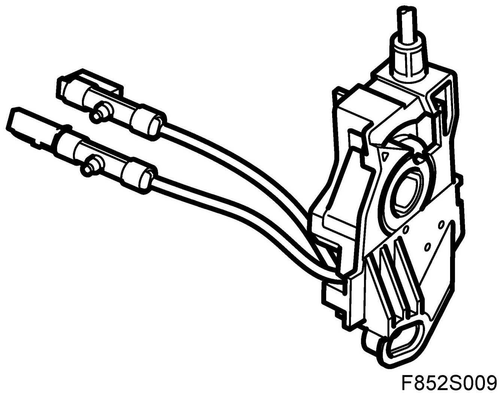
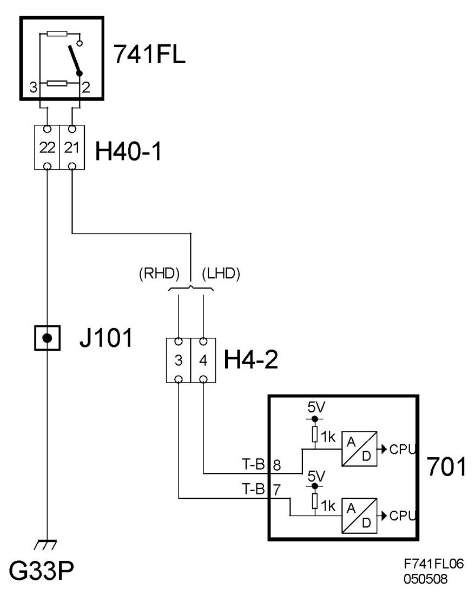
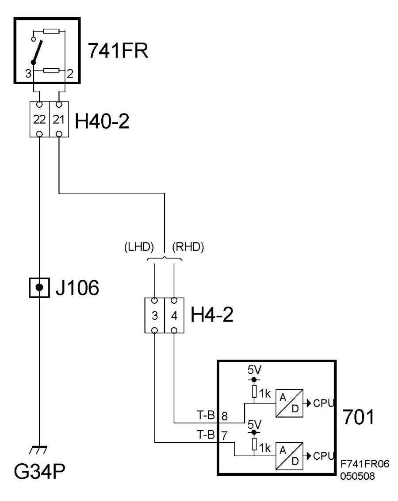

Microswitch For Backrest, Locked In Upright Position, Left/Right Seat (741FL/FR)
Microswitch For Backrest, Locked In Upright Position, Left/right Seat (741FL/FR)
Location
Microswitch for backrest, locked in upright position, left seat (741FL)
Microswitch for backrest, locked in upright position, right seat (741FR)

Main task
The microswitch is used to determine whether the seat backrest is in the upright position.
Type
The switch is of the normally open type. In non-activated position (backrest in normal position, locked in upright position) the switch is open. When the backrest is folded forwards, the switch closes. The resistors for diagnosis are integrated in the switch.
Connect
Switch pin 3 is grounded to grounding point G33P for 741FL and G34P for 741FR. Switch pin 2 is connected to REC (701) pin 8 for 741FL and pin 7 for 741FR. When the switch is open, the voltage is about 5V on pins 7 and 8. When the switch is closed, the voltage is about 3.5V.
Diagram FL

Diagram FR
